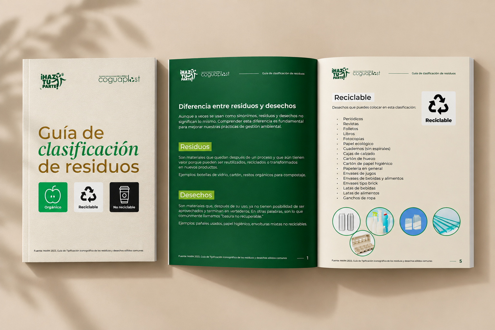
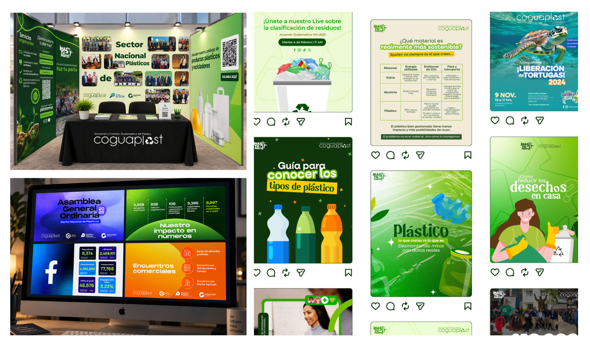
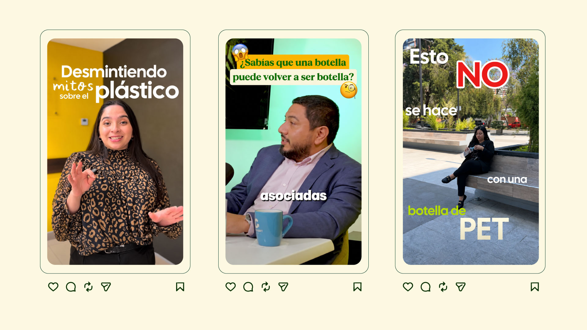
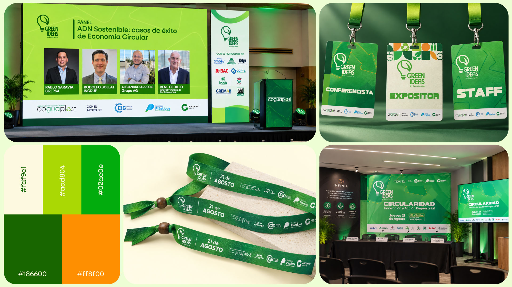
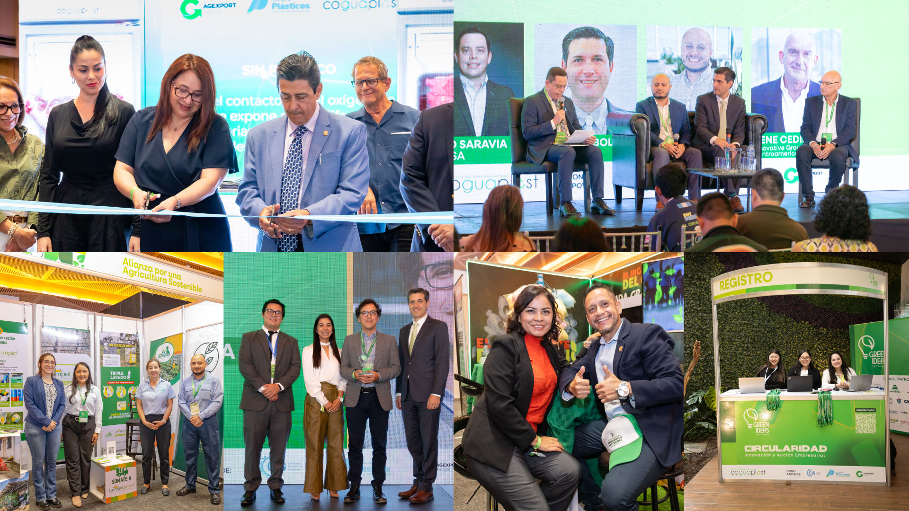
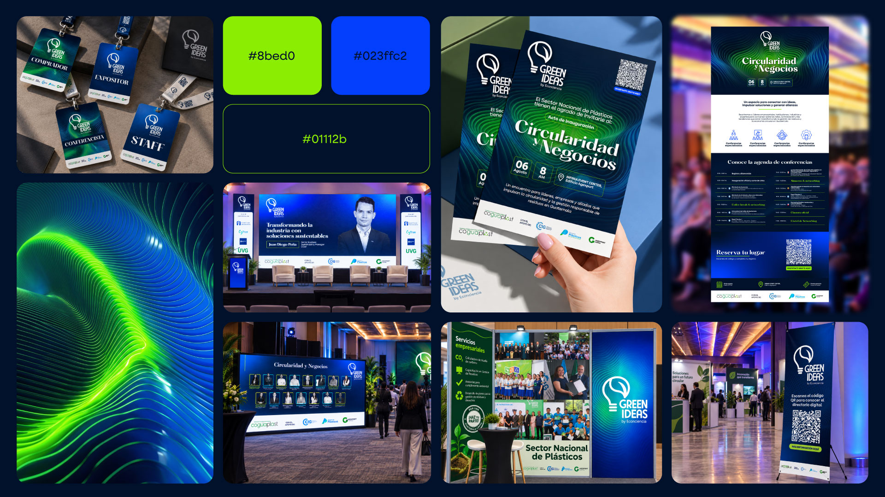
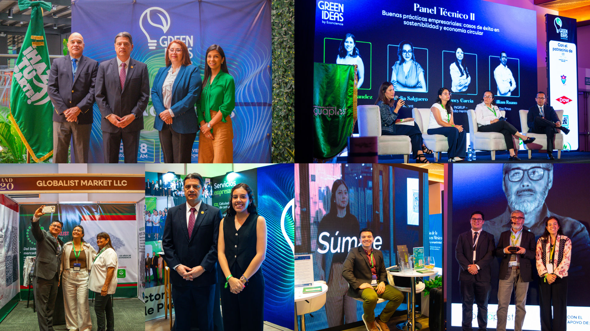
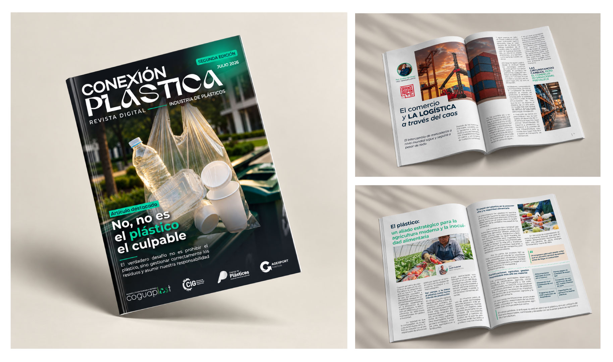
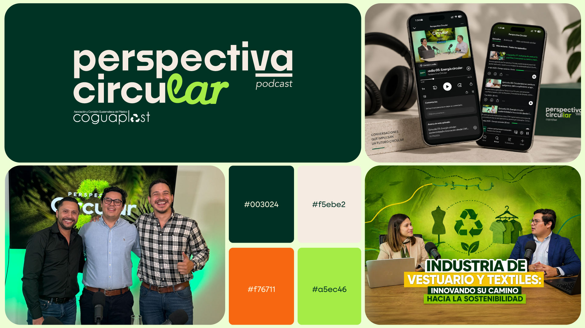

Building an ongoing digital presence for Guatemala's plastics industry.
Coguaplast is the Guatemalan Plastics Association, representing and connecting companies across the country's plastics industry. Since 2024, I've worked with the organization across content, social media and digital marketing, supporting its communication through an ongoing collaboration that has expanded into events, editorial projects and sector initiatives.

Different audiences.
Different initiatives.
As an industry association, Coguaplast communicates with different audiences and across different initiatives, from sector information and sustainability topics to events, educational content and institutional communication. The challenge is to turn that variety into digital content that feels clear, relevant and consistent while adapting the communication to each initiative.

My approach starts by understanding the purpose behind each initiative and translating it into the right communication format. Rather than treating every piece of content the same way, I adapt the concept, visual direction and execution depending on the audience, channel and objective, while maintaining consistency across Coguaplast's broader communication.
01 — Ongoing Digital Communication


02 — Green Ideas
Green Ideas is an event focused on sustainability, circularity and innovation within Guatemala's plastics industry. I developed the event's visual communication in 2025 and continued the work for its 2026 edition.




03 — Conexión Plástica
Editorial design and development of Coguaplast's quarterly sector magazine, launched in 2026.

04 — Perspectiva Circular
Visual identity developed in 2025 for Coguaplast's podcast focused on the plastics sector and circularity.

What began as ongoing digital communication has grown into a broader creative collaboration across social media, events, editorial content and new communication initiatives. The work has continued to evolve alongside Coguaplast's needs.